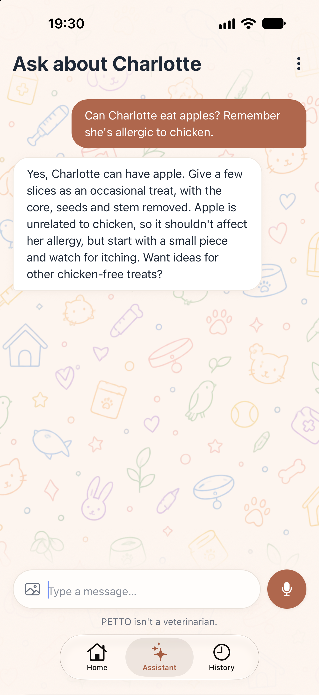

PETTO
AI ANSWERS
"Can she eat that?" Just
ask.

Ask in your own words
It remembers allergies
Answers for your pet, not every pet
General guidance, not a vet. For anything worrying, ask your vet.
Free on iOS & Android
Link in bio